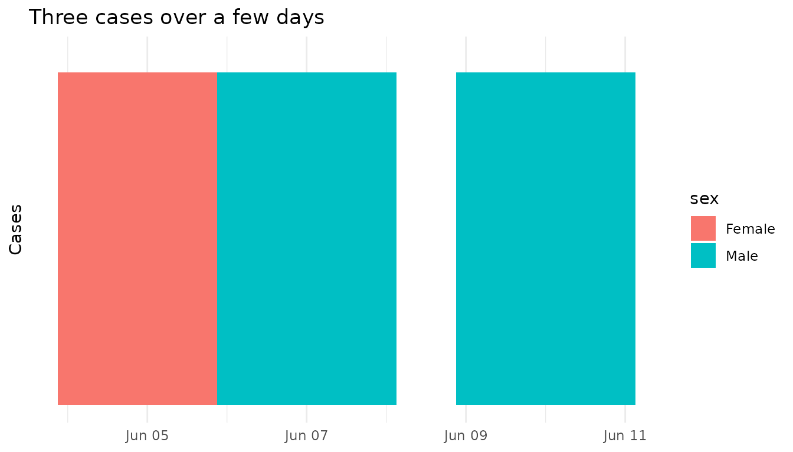
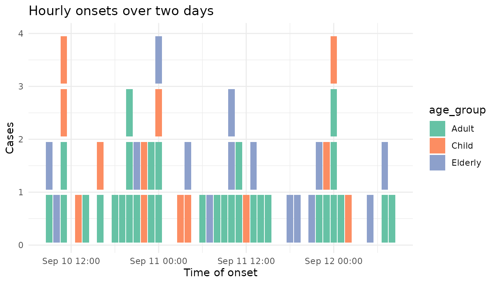
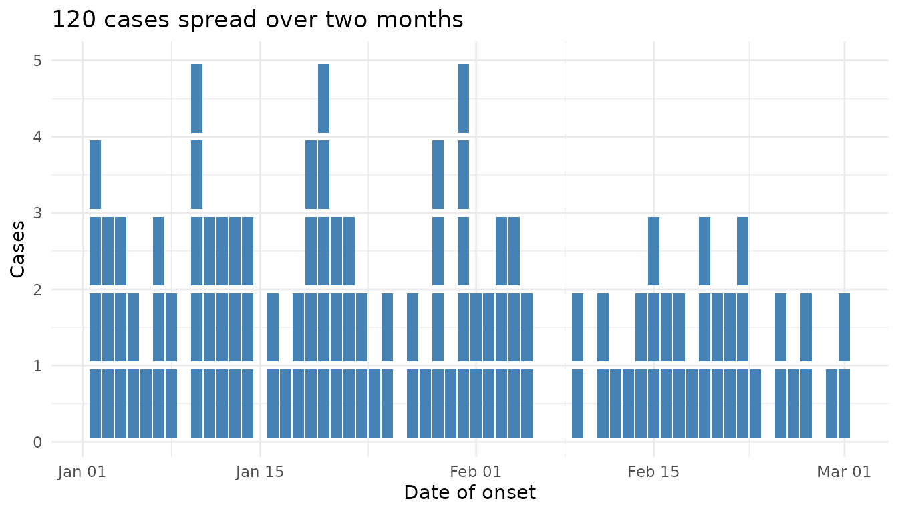
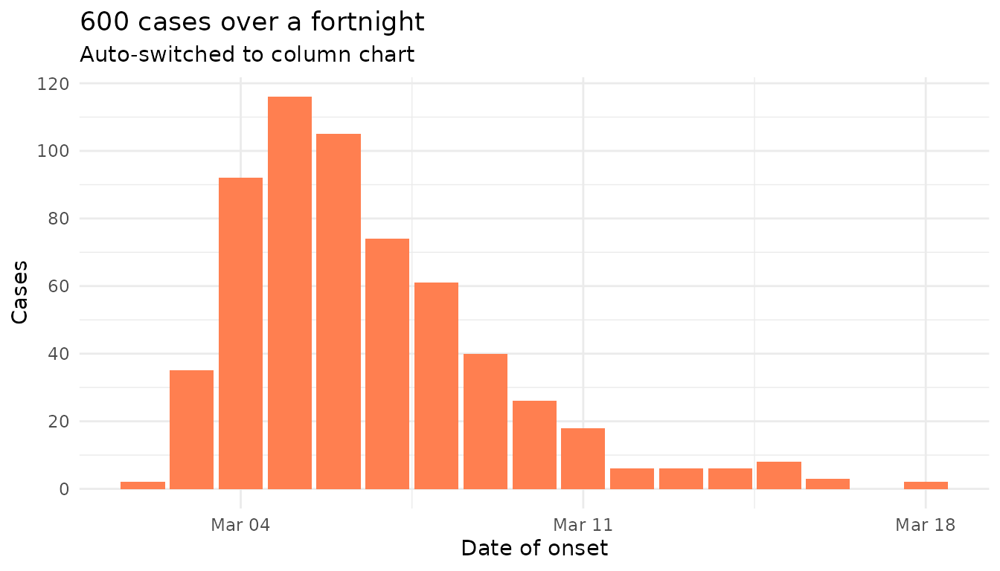
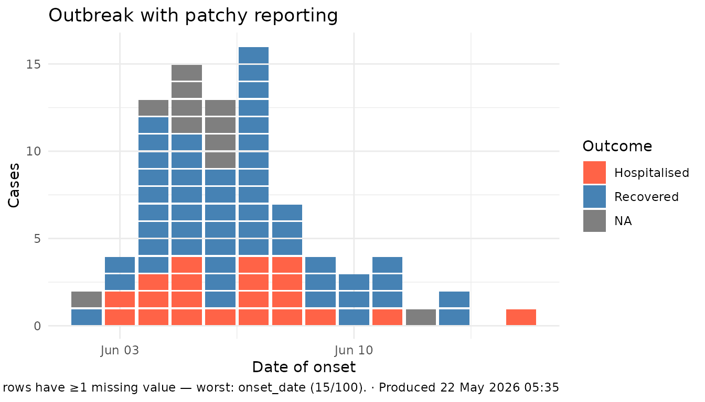
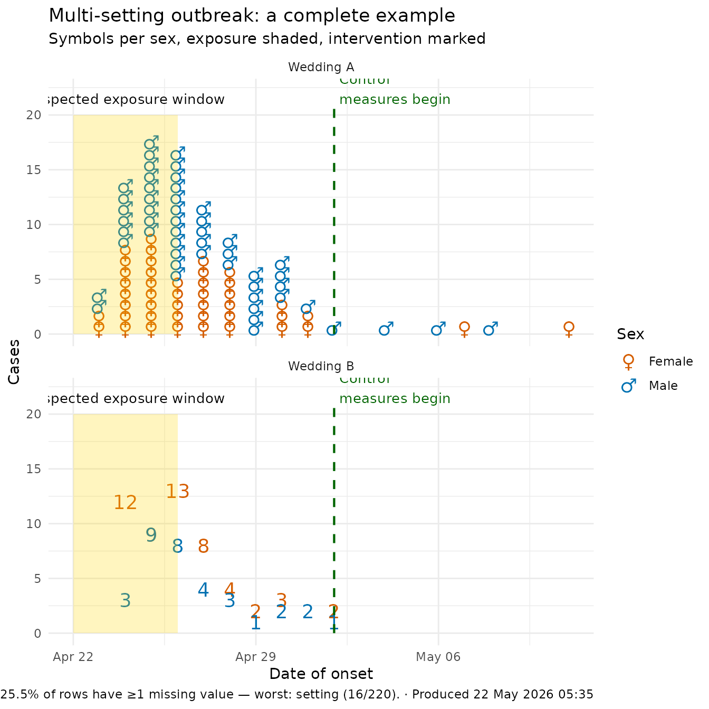

Realistic and corner-case epicurves
Source:vignettes/realistic-epicurves.Rmd
realistic-epicurves.RmdThis vignette walks through the kinds of awkward, real-world situations that an outbreak analyst hits when trying to draw an epicurve: missing data, very small or very large clusters, very short or very long time windows, and a final all-in-one example.
Tiny cluster (n = 3)
tiny <- simulate_outbreak(n = 3, seed = 42, prop_missing = 0)
ggplot(tiny, aes(x = onset_date, fill = sex)) +
geom_epicurve() +
scale_y_epicurve() +
labs(title = "Three cases over a few days",
x = NULL, y = "Cases") +
theme_minimal()
Short window, dense onset (hourly)
hourly <- simulate_outbreak(
n = 60,
time_unit = "hourly",
pattern = "continuous",
date_range = 2,
exposure = "2024-09-10",
seed = 5,
prop_missing = 0
)
ggplot(hourly, aes(x = onset_time, fill = age_group)) +
geom_epicurve() +
scale_y_epicurve() +
scale_fill_brewer(palette = "Set2") +
labs(title = "Hourly onsets over two days",
x = "Time of onset", y = "Cases") +
theme_minimal()
Long window, slow burn (60 days)
long <- simulate_outbreak(
n = 120,
pattern = "continuous",
date_range = 60,
exposure = "2024-01-01",
seed = 6,
prop_missing = 0
)
ggplot(long, aes(x = onset_date)) +
geom_epicurve(fill = "steelblue") +
scale_y_epicurve() +
labs(title = "120 cases spread over two months",
x = "Date of onset", y = "Cases") +
theme_minimal()
Large outbreak (auto-switches to column mode)
When stacked squares would exceed max_stack on any day,
the geom switches automatically to a column chart so the y-axis stays
readable:
big <- simulate_outbreak(
n = 600,
pattern = "point_source",
date_range = 14,
exposure = "2024-03-01",
seed = 7,
prop_missing = 0
)
ggplot(big, aes(x = onset_date)) +
geom_epicurve(fill = "coral", max_stack = 20) +
scale_y_epicurve() +
labs(title = "600 cases over a fortnight",
subtitle = "Auto-switched to column chart",
x = "Date of onset", y = "Cases") +
theme_minimal()
Missing data, with an automatic footnote
The default simulate_outbreak() injects a small
proportion of missing values. epicurve_footnote()
summarises this and stamps the chart with the run time:
patchy <- simulate_outbreak(n = 100, seed = 8, prop_missing = 0.12)
ggplot(patchy, aes(x = onset_date, fill = outcome)) +
geom_epicurve() +
scale_fill_manual(values = c(Recovered = "steelblue",
Hospitalised = "tomato")) +
scale_y_epicurve() +
labs(title = "Outbreak with patchy reporting",
x = "Date of onset", y = "Cases", fill = "Outcome") +
theme_minimal() +
epicurve_footnote(patchy)
Everything at once
This last example combines: missing data, faceting by setting, per-category Unicode symbols (with auto legend), a shaded exposure window, an event line for control measures, and an automatic footnote.
outbreak <- simulate_outbreak(
n = 220,
exposure = as.Date("2024-04-22"),
meanlog = 1.4,
sdlog = 0.55,
prop_missing = 0.05,
seed = 11
)
sex_symbols <- c(Female = "\u2640", Male = "\u2642")
# Drop rows with NA in the aesthetics we use (real-life chart prep)
plot_data <- outbreak[!is.na(outbreak$sex) &
!is.na(outbreak$setting) &
!is.na(outbreak$onset_date), ]
ggplot(plot_data, aes(x = onset_date, colour = sex)) +
geom_epicurve(symbol = sex_symbols, symbol_size = 5) +
annotate_period(
date = as.Date("2024-04-22"),
end_date = as.Date("2024-04-26"),
label = "Suspected exposure window",
fill = "gold", alpha = 0.25
) +
annotate_event(
date = as.Date("2024-05-02"),
label = "Control\nmeasures begin",
colour = "darkgreen"
) +
scale_colour_manual(
values = c(Female = "#D55E00", Male = "#0072B2"),
name = "Sex"
) +
facet_wrap(~ setting, ncol = 1, scales = "free_y") +
scale_y_epicurve() +
labs(
title = "Multi-setting outbreak: a complete example",
subtitle = "Symbols per sex, exposure shaded, intervention marked",
x = "Date of onset", y = "Cases"
) +
theme_minimal() +
epicurve_footnote(outbreak)